Nobles and knights started using Coat-of-Arms during the Middle Ages. To identify himself during battle and military tournaments, a knight painted something on his shield. This became his personal identification. He also used this picture as his personal seal — almost like ones signature in modern times. A signature is only one persons identification and nobody else.
In time the oldest son started using his fathers shield (and the Coat-of-Arms on the shield). Even later this Coat-of-Arms were used as family Coat-of-Arms.
At present we are only aware of three Henning families — one in South Africa and two in Germany using specific Coats-of-Arms. Over the ages several Henning / Hennings / Hennig Coats-of-Arms were used. In the authoritative publication "Armrial Géeacute;néeacute;ral" by J B Rietstap, which have been illustrated by Roland, more than 112 000 family Coats-of-Arms are shown. Of these eleven (11) were identified as Henning / Hennings / Hennig Coats-of Arms. These Coats-of-Arms are also shown below.
| 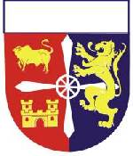 | The Coat-of-Arms of the Peter Henrich Hennig Family League of South Africa. This Coat-of-Arms was officially registered with the State Herald of South Africa — Government notice nr 1353 in Government Gazette nr 9791 dated 21 June 1985. The simbolism of the Coat-of-Arms is described in the pages of Henning families of South Africa. |
| 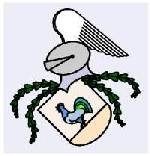 | The Henning families who used this Coat-of-Arms since the Middle Ages, originally lived at Demmin, near Stralsund and Greiffswalt in Mecklenburg-Vorpommern, Germany. Later they moved to Karnin (also near Stralsund) Until the 30-years War (1618 — 1648) these areas were under control of Danmark. This is the area where the name Henning originated during 1290. Compare this Coat-of-Arms with the Coat-of-Arms, Henning, Allem(agne) further on. |
| 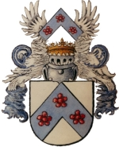 | Laurentius Henning (* Rudolstadt 28-3-1602) was the first son of Caspar Henning, who came to Rudolstadt (Germany) from Frankenhausen towards the end of the sixteenth Century. During 1660 Laurentius was allowed to the aristocracy in Wienna and obtained the right to use the name "VON HENNING AUF SCHÖOuml;NHOFF" and this Coat-of-Arms. He and his descendants were members of the Prussian military aristocracy. The family tree of this family can be found under the heading "Genealogy", "Germany(2)" Compare this Coat-of-Arms with the coat-of-arms, Henning de Schöouml;nhoff, Prusse here-under. |
Henning / Hennings / Hennig Coats-of-Arms traced by Rietstap
| 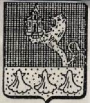 | The Henning family who used this Coat-of-Arms lived in the areas which is known today as Poland and Latvia. |
| 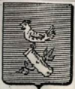 | The Henning family who used this Coat-of-Arms lived in the area which is known today as Latvia. |
| 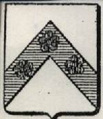 | The Prussian family who used this Coat-of-Arms, lived in the area which is known today as Germany. |
| 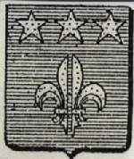 | The family who used this Coat-of-Arms lived in the vicinity of Cologne, Germany. |
| 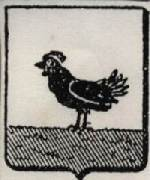 | This Coat-of-Arms correspond with the Coat-of-Arms used by the Henning family of Demmin/ Karnin (above). |
| 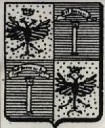 | Take note that this family used the name Hennings. Pom is probably the abreviation of Pommern (Germany). |
| 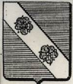 | Another Hennings family. Originally from Danmark. |
| 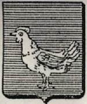 | This family lived in Germany. In al probability a variation of the Coat-of-Arms used by the Demmin / Karnin Henning family. |
| 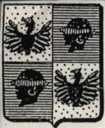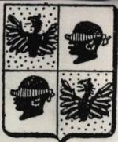 | Two variations of the Coat-of-Arms used by a Hennig family of Bavaria, Germany. |
| 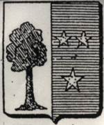 | The Coat-of-Arms of a Hennig family of Prusse (today part of Germany). |